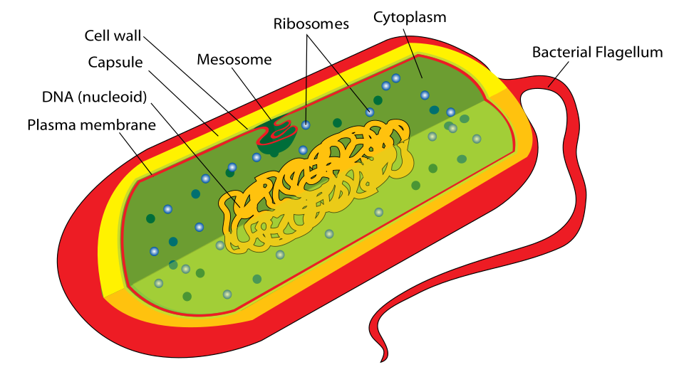
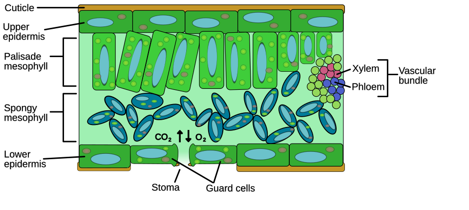

EXAM TIPClassification (high-yield Tier A): Binomial nomenclature — Genus species (Latin, italicised) by Carl Linnaeus (1758). Five Kingdom classification — R.H. Whittaker (1969): Monera (prokaryotes, no nucleus), Protista (unicellular eukaryotes), Fungi (heterotrophic, chitin cell wall), Plantae (autotrophic, cellulose), Animalia (heterotrophic, no cell wall). Three Domains — Carl Woese (1990): Archaea, Bacteria, Eukarya (based on rRNA). Plant groups: Bryophyta (mosses, no vascular tissue — "amphibians of plant kingdom"), Pteridophyta (ferns, vascular, spores), Gymnosperms (conifers, naked seeds), Angiosperms (enclosed seeds — Monocots 1 cotyledon/parallel veins vs Dicots 2 cotyledon/reticulate veins). Animal phyla: Porifera (sponges, pores), Cnidaria (hydra, jellyfish, stinging cells), Platyhelminthes (flatworms, tapeworm), Nematoda (roundworms, Ascaris), Annelida (earthworm, segmented), Arthropoda (largest phylum — insects, crabs, spiders; jointed legs), Mollusca (snail, octopus; muscular foot), Echinodermata (starfish; water vascular system), Chordata (notochord). Vertebrate classes: Pisces (fish), Amphibia (frog), Reptilia (lizard, snake), Aves (birds), Mammalia (hair, mammary glands).
💡 Deep-dive ready: Complete analysis of all five kingdoms, plant divisions, animal phyla, vertebrate classes, Bihar biodiversity, and 7 exam predictions:
Classification Master Detail →

Prokaryotic cell (bacterium) — Kingdom Monera. No true nucleus (DNA in nucleoid region), no membrane-bound organelles, has cell wall (peptidoglycan), 70S ribosomes, may have plasmids, flagella for locomotion. Bacteria are unicellular prokaryotes — the simplest and most ancient life form. Domain Bacteria + Domain Archaea together make up Kingdom Monera.
A. Binomial Nomenclature & Taxonomic Hierarchy EXAM CORE
Rank (Top → Bottom)
Example (Human)
Example (Mango)
Kingdom
Animalia
Plantae
Phylum / Division
Chordata
Angiospermae (Division)
Class
Mammalia
Dicotyledonae
Order
Primates
Sapindales
Family
Hominidae
Anacardiaceae
Genus
Homo
Mangifera
Species
sapiens
indica
Carl Linnaeus (1707–1778): "Father of Taxonomy." Introduced binomial nomenclature in Systema Naturae (1735; 10th edition 1758 = starting point of zoological nomenclature). Each organism has a two-part name: Genus (capitalised) + species (lowercase), written in italics (or underlined when handwritten). E.g., Homo sapiens, Mangifera indica, Euryale ferox (makhana).
Rules: Genus is always capitalised, species is always lowercase. Both in Latin (italicised). E.g., Escherichia coli (E. coli after first mention).
B. Five Kingdom Classification — R.H. Whittaker (1969) PYQ PATTERN
Kingdom
Cell Type
Body Organisation
Mode of Nutrition
Cell Wall
Key Examples
Monera
Prokaryotic (no nucleus)
Unicellular
Autotrophic (photosynthetic / chemosynthetic) or heterotrophic
Present (peptidoglycan/murein in bacteria; pseudopeptidoglycan in archaea)
Bacteria (E. coli), Cyanobacteria (blue-green algae, Nostoc), Archaebacteria (methanogens, halophiles), Mycoplasma (no cell wall)
Basis of Whittaker's classification: (1) Cell structure (prokaryotic vs eukaryotic), (2) Body organisation (unicellular vs multicellular), (3) Mode of nutrition (autotrophic vs heterotrophic), (4) Reproduction, (5) Phylogenetic relationship (evolutionary).
Euglena: "connecting link" between plant and animal — has chloroplasts (photosynthesis, like plants) but also feeds heterotrophically (like animals) and lacks cell wall.
🧠 Mnemonic — Five Kingdoms (Whittaker 1969): Monera, Protista, Fungi, Plantae, Animalia "My Pet Fish Plants Animals" → Monera, Protista, Fungi, Plantae, Animalia.
Nutrition order: Auto/Mixo → Auto/Hetero → Hetero (saprophyte) → Auto → Hetero (ingestive).

Plant leaf structure — Kingdom Plantae (Angiosperm). The leaf is the site of photosynthesis: chloroplasts (containing chlorophyll) capture sunlight; stomata (pores on lower epidermis) exchange gases (CO₂ in, O₂ out); xylem transports water, phloem transports food. Angiosperms are the most diverse plant group — divided into Monocots (one cotyledon, parallel venation) and Dicots (two cotyledons, reticulate venation).
C. Three Domain System — Carl Woese (1990) PYQ PATTERN
Domain
Cell Type
Includes
Key Feature
Archaea
Prokaryotic
Archaebacteria
Distinct cell membrane lipids (ether bonds); histones present; no peptidoglycan. Extremophiles: methanogens, halophiles, thermoacidophiles. More closely related to Eukarya than to Bacteria.
Bacteria
Prokaryotic
Eubacteria, Cyanobacteria, Mycoplasma
Cell wall has peptidoglycan (murein). Includes most bacteria — E. coli, Gram-positive/negative, cyanobacteria.
Carl Woese & George Fox (1977): proposed Six Kingdom system (splitting Monera into Eubacteria and Archaebacteria). Woese (1990): formalised Three Domain system based on 16S/18S rRNA sequence analysis — Archaea and Bacteria are as different from each other as each is from Eukarya.
Archaebacteria examples: Methanogens (in cow rumen and swamps — produce methane), Halophiles (salt lakes — Great Salt Lake), Thermoacidophiles (hot acidic springs — Yellowstone).
D. Plant Kingdom — Major Groups EXAM CORE
Group
Vascular Tissue
Seed
Flower/Fruit
Reproduction
Key Examples & Features
Thallophyta (Algae)
Absent
No
No
Spores
Spirogyra, Ulothrix, Chara, Kelps (brown algae). Body not differentiated into root/stem/leaf (thallus). Chlorophyll present → autotrophic.
Bryophyta
Absent
No
No
Spores
"Amphibians of plant kingdom" — need water for fertilisation. Mosses (Funaria), Liverworts (Marchantia). No true root → rhizoids. First land plants.
Pteridophyta
Present (xylem + phloem)
No
No
Spores
Ferns (Pteris), Selaginella, Horsetail. First vascular plants; first true roots/stem/leaves. Need water for fertilisation (male gametes motile).
Gymnosperms
Present
Yes (naked)
No
Seeds (no fruit)
Pines (Pinus), Cycas, Cedar, Ginkgo. Seeds exposed on cone scales (no fruit wall). Needle-like leaves, thick cuticle (xerophytic).
Angiosperms
Present
Yes (enclosed in fruit)
Yes
Seeds + Fruits
Largest plant group (~3 lakh species). Mango, rice, wheat, rose, sunflower. Divided into Monocots & Dicots.
🧠 Mnemonic — Animal Phyla Order: Porifera, Cnidaria, Platyhelminthes, Nematoda, Annelida, Arthropoda, Mollusca, Echinodermata, (Hemi)chordata "P C P N A A M E C" — "Please Come Play Near AArthropod's Monster Elephant, Chordate."
Key: Porifera=pores, Cnidaria=stinging cells, Platyhelminthes=flat, Nematoda=round, Annelida=segmented, Arthropoda=jointed legs, Mollusca=muscular foot, Echinodermata=water vascular system, Chordata=notochord.
F. Chordata — Vertebrate Classes PYQ PATTERN
Class
Key Features
Respiration
Heart
Examples
Pisces (Fish)
Streamlined body; scales; fins; gills; cold-blooded (poikilothermic); 2-chambered heart; lateral line system
Heart chambers progression: 2-chambered (Pisces) → 3-chambered (Amphibia, Reptilia) → 4-chambered (Aves, Mammalia, Crocodile). Crocodile is the only reptile with a 4-chambered heart.
Only flying mammal: Bat. Only egg-laying mammals (monotremes): Platypus & Echidna. Marsupials (pouched): Kangaroo, Koala.
Gangetic Dolphin (Platanista gangetica gangetica): National Aquatic Animal of India; blind (uses echolocation); found in Ganga & its tributaries in Bihar; State Animal of city of Patna; endangered (IUCN EN), Schedule I (WPA 1972).
Peacock (Pavo cristatus): National Bird of India. Found in Bihar's Valmiki Tiger Reserve, Rajgir hills, and forested areas.
Gangetic Dolphin (Platanista gangetica gangetica): National Aquatic Animal of India (declared 2009). Found in Ganga, Gandak, Kosi, Son rivers of Bihar. Vikramshila Gangetic Dolphin Sanctuary (Bhagalpur district, 50 km stretch of Ganga) — Asia's ONLY dedicated dolphin sanctuary (established 1991). Blind mammal — uses echolocation to navigate and hunt fish. IUCN status: Endangered. Schedule I of Wildlife (Protection) Act, 1972. Bihar celebrates National Dolphin Day on October 5 annually. Estimated ~3,000 dolphins in Ganga basin (Bihar has ~1,500+).
Valmiki Tiger Reserve (VTR): Bihar's ONLY Tiger Reserve (Bettiah, West Champaran). Declared 1990. ~899 sq km core + buffer. ~40 tigers (2022 census). Part of Someshwar Hills (Himalayan foothills). Also home to leopards, sloth bear, sambar, chital, peafowl, hornbill. Biodiversity hotspot — mixes Terai & Himalayan species.
Bhimbandh Wildlife Sanctuary: Munger district. Famous for hot springs (geothermal) + diverse mammals (tiger, leopard, sloth bear, four-horned antelope). ~682 sq km. One of Bihar's largest sanctuaries.
Rajgir Wildlife Sanctuary: Nalanda district. ~36 sq km. Hills of Rajgir (Rajgriha — ancient capital of Magadha). Home to peafowl (state bird), nilgai, jackal, hyena, leopard. Adjacent to Pant Wildlife Sanctuary (Kawal/Kaimur range). Sarus crane sightings in nearby wetlands.
Makhana (Euryale ferox): Bihar's GI-tagged aquatic cash crop. Classified as Family: Nymphaeaceae (water lily family), Kingdom Plantae, Angiosperm — Dicotyledon. Cultivated in ponds/wetlands of Darbhanga, Madhubani, Purnia, Katihar. Bihar produces >85% of world's makhana. Makhana processed into popped seeds (fox nuts) — high protein, low fat. Mithila Makhana received GI tag (2022). Floating leaves with thorns on lower surface; purple flowers.
Bihar Fish Diversity: ~180+ fish species recorded. Major carp (Rohu, Catla, Mrigal), Hilsa (Tenualosa ilisha — migratory; was abundant in Ganga before Farakka barrage), Singhi, Magur (air-breathing catfish — can survive in low O₂ waterlogged Bihar fields), Koi. Inland fisheries production: Bihar >6 lakh tonnes/year (top 5 in India). Hilsa = State Fish of Bihar (declared). Rohu, Katla = State's staple aquaculture species.
Peafowl (State Bird): Indian Peacock (Pavo cristatus) — National Bird of India and widely found in Bihar's forests (Valmiki TR, Rajgir WS, Bhimbandh WS, Kaimur WS). Class Aves; sexual dimorphism (male has iridescent train). Protected Schedule I (WPA 1972).
Sal forests:Shorea robusta — dominant tree species of Bihar's forests (Valmiki TR, Bhimbandh, Kaimur, Rajgir). Angiosperm, Dicot. Timber used for railway sleepers, furniture. Sal seeds yield vegetable fat. Forest cover in Bihar: ~7% of geographical area (Forest Survey of India).
Kaimur Wildlife Sanctuary: Kaimur range (Rohtas, Kaimur districts). Largest WLS in Bihar (~1,342 sq km). Tigers, leopards, sloth bear, chital, sambar, peafowl. Caves with prehistoric rock paintings.
Notable mammals of Bihar: Tiger (VTR), Leopard, Sloth Bear, Nilgai (largest antelope of Asia — common in Bihar fields), Four-horned Antelope, Chital, Sambar, Wild Boar, Gangetic Dolphin, Indian Fox, Hyena.
🔗 Cross-Topic Connections
Topic 69 (Cell & Division): Prokaryotes (Monera) lack a true nucleus and reproduce by binary fission (no mitosis/meiosis). Eukaryotes (Protista–Animalia) have a true nucleus with chromosomes, undergo mitosis & meiosis. The cell wall composition (peptidoglycan vs cellulose vs chitin) distinguishes Monera, Plantae, Fungi.
Topic 70 (Human Body Systems): Humans belong to Phylum Chordata, Class Mammalia. Mammalian features — hair, mammary glands, 4-chambered heart, diaphragm, viviparity. The heart's 4 chambers (covered here) link to the circulatory system.
Topic 71 (Nutrition & Vitamins): Autotrophs (Plantae) are the base of all food chains — they convert solar energy into chemical energy (photosynthesis). Heterotrophs (Animalia, Fungi) depend on them. Saprophytic fungi decompose dead matter → recycle nutrients.
Topic 74 (Genetics & Evolution): Phylogenetic classification (Whittaker, Woese) reflects evolutionary relationships. Evolutionary trees use rRNA/DNA sequencing. Charles Darwin's theory of natural selection (1859) underlies modern classification.
📰 Current Relevance
Gangetic Dolphin conservation: Project Dolphin (launched 2020, on lines of Project Tiger) — to conserve both river (Ganges + Indus) and oceanic dolphins. Bihar's Vikramshila Dolphin Sanctuary is a key site. National Dolphin Day: October 5. 2024–25: Dolphin census in Ganga using acoustic monitoring (echolocation clicks).
Wildlife census Bihar 2024: Tiger count in VTR rose to ~40 (from 28 in 2018). Leopard sightings increasing. Bihar planning second tiger reserve in Kaimur/Bhimbandh.
Makhana GI tag & export: "Mithila Makhana" received GI tag (2022). Export promotion under ODOP (One District One Product). Makhana processing clusters in Darbhanga/Madhubani. APEDA promoting export to USA, EU, Gulf. Bihar govt's Makhana Mission (2024) — area expansion, processing infrastructure.
IPBES / biodiversity reports: IPBES (Intergovernmental Science-Policy Platform on Biodiversity & Ecosystem Services) 2019 report — 1 million species face extinction. India's National Biodiversity Action Plan. Bihar State Biodiversity Board (BSBB) — biodiversity registers in panchayats.
New species discoveries: 2023–24 — several new frog, fish, and insect species described from Eastern Ghats & Himalayan foothills. Indian scientists revise amphibian & reptile taxonomy using DNA barcoding.
CBAM & forest classification: India's forest cover mapped using satellite data (Forest Survey of India — ISFR biennial). Sal forests of Bihar monitored for carbon sequestration. Mangrove cover (Sundarbans) expansion tracked.
MSP for makhana: Bihar govt considering Minimum Support Price for makhana to boost farmer income. Makhana Cooperative Federation in Darbhanga.
PREDICTION72nd BPSC Top 5 Predictions — Classification:
Five Kingdom basis — match organism to kingdom (e.g., yeast=Fungi, Amoeba=Protista, mushroom=Fungi, blue-green algae=Monera). Cell wall composition (cellulose vs chitin vs peptidoglycan) is the key differentiator.
Whittaker (1969) vs Woese (Three Domains — Archaea, Bacteria, Eukarya). Know the basis: cell structure + nutrition + body organisation (Whittaker) vs rRNA (Woese).
Bryophytes = "amphibians of plant kingdom" (no vascular tissue, need water for fertilisation). Pteridophytes = first vascular plants. Gymnosperms = naked seeds. Angiosperms = enclosed seeds.
Test your knowledge. Select the best answer for each question, then click "Check Answers" to see your score and explanations.
Your Score: 0/25
Q1. The five kingdom classification of living organisms was proposed by whom and in which year?
✅ Correct Answer: (D) — R.H. Whittaker proposed the Five Kingdom classification in 1969: Monera, Protista, Fungi, Plantae, Animalia. Basis: (1) cell structure (prokaryotic/eukaryotic), (2) body organisation (unicellular/multicellular), (3) mode of nutrition, (4) reproduction, (5) phylogenetic relationship. Linnaeus (1735) proposed Two Kingdom (Plantae, Animalia). Haeckel (1866) added Protista as a third kingdom. Woese (1990) proposed the Three Domain system (Archaea, Bacteria, Eukarya).
Q2. The cell wall of fungi is composed of which substance?
✅ Correct Answer: (B) — Fungal cell walls are made of chitin (a nitrogen-containing polysaccharide, N-acetylglucosamine). Interestingly, the same chitin forms the exoskeleton of arthropods (insects, crabs) — showing an evolutionary connection. Plant cell wall = cellulose. Bacterial cell wall = peptidoglycan (murein). Archaea have pseudopeptidoglycan. Animals have no cell wall. Mycoplasma is the exception among Monera — it lacks a cell wall entirely.
Q3. Which kingdom includes organisms that are prokaryotic and lack a true nucleus?
✅ Correct Answer: (C) — Kingdom Monera contains all prokaryotes — organisms WITHOUT a true nucleus or membrane-bound organelles. Includes bacteria (e.g., E. coli), cyanobacteria (blue-green algae like Nostoc), archaebacteria (methanogens, halophiles), and Mycoplasma (smallest, no cell wall). They have 70S ribosomes and a nucleoid region (DNA not enclosed by nuclear membrane). Protista, Fungi, Plantae, Animalia are all eukaryotic.
Q4. Binomial nomenclature, the system of giving each organism a two-part scientific name (Genus + species), was introduced by which scientist?
✅ Correct Answer: (C) — Carl Linnaeus introduced binomial nomenclature in Systema Naturae (10th edition, 1758 — the official starting point of zoological nomenclature). Each species gets a two-part Latin name: Genus (capitalised) + species (lowercase), written in italics or underlined. Examples: Homo sapiens (human), Mangifera indica (mango), Euryale ferox (makhana), Platanista gangetica (Gangetic dolphin). Linnaeus is the "Father of Taxonomy." Darwin proposed evolution by natural selection (1859). Whittaker proposed five kingdoms. Woese proposed three domains.
Q5. The Three Domain system of classification (Archaea, Bacteria, Eukarya) was proposed by whom and on what basis?
✅ Correct Answer: (C) — Carl Woese (with George Fox, 1977; formalised as Three Domain in 1990) proposed the system based on ribosomal RNA (rRNA) sequence comparison. He discovered that Archaea (archaebacteria) are biochemically and genetically as distinct from Bacteria (eubacteria) as they are from Eukarya. Archaea: ether-linked membrane lipids, no peptidoglycan, often extremophiles (methanogens, halophiles, thermoacidophiles). Bacteria: peptidoglycan cell wall. Eukarya: true nucleus, membrane-bound organelles, 80S ribosomes.
Q6. Bryophytes (mosses and liverworts) are known as the "amphibians of the plant kingdom" because they:
✅ Correct Answer: (C) — Bryophytes (mosses, liverworts, hornworts) are called "amphibians of the plant kingdom" because, although they grow on land, they require water for sexual reproduction — the male gametes (antherozoids) are motile (flagellated) and must swim through water to reach the egg (archegonium). They also lack true vascular tissue (no xylem/phloem) and true roots (have rhizoids). They are the first land plants in evolution. Examples: Funaria (moss), Marchantia (liverwort). Pteridophytes (ferns) also need water for fertilisation but have vascular tissue.
Q7. Which is the LARGEST animal phylum in terms of number of species?
✅ Correct Answer: (D) — Arthropoda (Greek: "jointed feet") is the largest animal phylum — ~80% of all described animal species (>1.2 million; insects alone >1 million). Features: jointed appendages, exoskeleton of chitin (moulting/ecdysis), segmented body, open circulatory system (haemocoel), compound eyes. Includes insects (butterfly, mosquito, cockroach, honeybee), crustaceans (crab, prawn, lobster), arachnids (spider, scorpion, tick), myriapods (centipede, millipede). Mollusca is the second largest. Chordata ~65,000 species (fish, amphibians, reptiles, birds, mammals).
Q8. The presence of stinging cells (nematocysts/cnidoblasts) is a characteristic feature of which animal phylum?
✅ Correct Answer: (C) — Phylum Cnidaria (also called Coelenterata) is defined by cnidoblasts/nematocysts — stinging cells used for defence and paralysing prey. Cnidaria are diploblastic (two germ layers), radially symmetrical, and have two body forms: polyp (sessile — Hydra, sea anemone) and medusa (free-swimming — jellyfish). Examples: Hydra, Jellyfish, Sea anemone, Obelia, Corals (which build coral reefs — exoskeleton of calcium carbonate). Porifera have canal systems and pores; Platyhelminthes have flame cells; Echinodermata have a water vascular system.
Q9. Match the animal with its phylum: 1. Earthworm 2. Tapeworm 3. Ascaris 4. Starfish
✅ Correct Answer: (A) — Earthworm (Pheretima) belongs to Annelida (segmented body, closed circulation, nephridia for excretion). Tapeworm (Taenia solium) belongs to Platyhelminthes (flat body, parasitic, flame cells for excretion). Ascaris (roundworm) belongs to Nematoda (cylindrical body, pseudocoelom, parasitic — causes ascariasis). Starfish (Asterias) belongs to Echinodermata (water vascular system, tube feet, radial symmetry in adults, only marine).
Q10. The Gangetic Dolphin (Platanista gangetica), found in the Ganga and its tributaries in Bihar, is classified in which class of vertebrates?
✅ Correct Answer: (D) — The Gangetic Dolphin (Platanista gangetica gangetica) is a mammal (Class Mammalia), NOT a fish. Like all mammals, it is warm-blooded (homeothermic), breathes air with lungs (must surface), gives birth to live young (viviparous), and nurses calves with mammary glands. It is blind (no lens in eye) and uses echolocation (sound clicks) to navigate and hunt fish in muddy Ganga waters. It is the National Aquatic Animal of India; IUCN: Endangered; Schedule I (WPA 1972). Bihar's Vikramshila Gangetic Dolphin Sanctuary (Bhagalpur) is Asia's only dedicated dolphin sanctuary. Common trap: students confuse dolphins (mammals) with fish — but dolphins have horizontal tail flukes (fish have vertical), lungs (not gills), and 4-chambered heart.
Q11. Which pair correctly distinguishes monocots from dicots?
✅ Correct Answer: (C) — Monocots (monocotyledons) have: 1 cotyledon, parallel leaf venation, fibrous root system, floral parts in multiples of 3, scattered vascular bundles. Examples: wheat, rice, maize, sugarcane, onion, bamboo, grass, makhana. Dicots (dicotyledons) have: 2 cotyledons, reticulate (net-like) venation, taproot system, floral parts in multiples of 4 or 5, vascular bundles in a ring. Examples: mango, rose, pea, gram, sunflower, mustard, neem, Sal (Shorea robusta). Option A reverses the two. Options B & D also reverse the traits.
Q12. Which of the following is a "connecting link" between plants and animals, possessing both plant-like (chloroplasts) and animal-like (heterotrophic feeding) characteristics?
✅ Correct Answer: (B) — Euglena is the classic "connecting link" between Plantae and Animalia. It has chloroplasts (performs photosynthesis in sunlight — plant-like) but in the dark, it feeds heterotrophically by absorbing organic matter (animal-like). It also lacks a cell wall (animal-like) but has a pellicle. It moves using a flagellum. Kingdom: Protista. Paramecium and Amoeba are purely animal-like (holozoic nutrition). Spirogyra is a green alga (purely plant-like). Other connecting links: Peripatus (Annelida ↔ Arthropoda), Balanoglossus (non-chordata ↔ chordata), Protopterus (fish ↔ amphibian).
Q13. The term "Amphibians of the Plant Kingdom" refers to which group of plants?
✅ Correct Answer: (C) — Bryophytes (mosses, liverworts, hornworts) are the "amphibians of the plant kingdom." They were the first plants to colonise land, but they still depend on water for sexual reproduction (motile male gametes swim to the egg). They lack true vascular tissue (no xylem/phloem) and true roots (have rhizoids for anchorage). Examples: Funaria (moss), Marchantia (liverwort). Pteridophytes (ferns) are the first vascular plants and also need water for fertilisation, but the specific phrase "amphibians of the plant kingdom" is reserved for Bryophytes (a common BPSC/UPSC point).
Q14. Makhana (Euryale ferox), an important aquatic cash crop of Bihar with a GI tag, belongs to which plant family and group?
✅ Correct Answer: (C) — Makhana (Euryale ferox) belongs to the family Nymphaeaceae (water lily family) — Kingdom Plantae, Angiosperm, Dicotyledon. It is an aquatic plant with large floating leaves (thorns on the lower surface) and purple flowers. The edible part is the popped seed (fox nut). Bihar produces >85% of the world's makhana, mainly in Darbhanga, Madhubani, Purnia, Katihar. "Mithila Makhana" received the GI tag in 2022. It is rich in protein, low in fat. The Bihar govt's Makhana Mission promotes its cultivation and export. Trap: students may think makhana is a monocot (aquatic), but it is a dicot (reticulate venation, 2 cotyledons, taproot-like system).
Q15. Gymnosperms differ from angiosperms in which key feature?
✅ Correct Answer: (C) — Gymnosperms (Greek: "gymnos" = naked, "spermos" = seed) have naked seeds — seeds are exposed on the surface of cone scales (megasporophylls), NOT enclosed in a fruit. Examples: Pine (Pinus), Cycas, Cedar, Spruce, Ginkgo. They do NOT produce flowers or fruits. They have vascular tissue (xylem/phloem) and needle-like leaves with thick cuticle (xerophytic adaptation). Angiosperms (Greek: "angeion" = vessel) have seeds enclosed in a fruit (the ovary develops into fruit after fertilisation) and bear flowers. Angiosperms are the largest plant group (~3 lakh species). Both gymnosperms and angiosperms are vascular seed plants; the difference is the flower/fruit and seed enclosure.
Q16. The exoskeleton of arthropods (insects, crabs, spiders) is made of which substance?
✅ Correct Answer: (C) — The arthropod exoskeleton is made of chitin (a nitrogen-containing polysaccharide, N-acetylglucosamine). The same chitin forms the cell wall of fungi — a notable biochemical link. The rigid exoskeleton protects and supports the body, but does not stretch — so arthropods must moult (ecdysis) periodically to grow, shedding the old exoskeleton and secreting a new larger one. Keratin is found in vertebrate skin derivatives (hair, nails, horns, feathers) — not arthropods. Cellulose = plants. Peptidoglycan = bacteria.
Q17. Which of the following is NOT a characteristic of the phylum Echinodermata?
✅ Correct Answer: (D) — Jointed appendages and chitin exoskeleton are characteristics of Arthropoda, not Echinodermata. Echinodermata features: (1) water vascular system (tube feet — for locomotion, food capture, respiration), (2) calcareous endoskeleton (ossicles with spines — "echino" = spiny, "derma" = skin), (3) radial symmetry in adults but bilateral in larvae (a secondary radial symmetry — they evolved from bilaterally symmetrical ancestors), (4) only marine, (5) high regeneration (starfish can regrow arms). Examples: Starfish (Asterias), Sea urchin, Sea cucumber, Brittle star.
Q18. Which of the following animals has a FOUR-chambered heart? (Select the most correct option)
✅ Correct Answer: (D) — Heart chambers progression: Pisces (2) → Amphibia (3) → Reptilia (3, except crocodile = 4) → Aves (4) → Mammalia (4). The crocodile is the only reptile with a 4-chambered heart (2 atria + 2 ventricles) — a notable exception often asked in exams. Birds and mammals have 4-chambered hearts, which completely separate oxygenated and deoxygenated blood → supports warm-blooded (homeothermic) metabolism. Fish have 2-chambered (single circulation). Amphibians & most reptiles have 3-chambered (mixed blood, double circulation incomplete). Mnemonic: "2-3-3-4-4" with crocodile as the reptile exception.
Q19. The scientific name of the Indian Peacock, the State/National Bird found in Bihar's Valmiki Tiger Reserve and Rajgir Wildlife Sanctuary, is:
✅ Correct Answer: (C) — The Indian Peacock (peafowl) is Pavo cristatus — the National Bird of India (declared 1963). Class Aves. Features: sexual dimorphism — male has iridescent blue neck and a long ornamental train (used in courtship display — "peacock dance" during monsoon); female (peahen) is dull brown. Found across India's forests, including Bihar's Valmiki Tiger Reserve, Rajgir Wildlife Sanctuary, Bhimbandh, Kaimur. Protected under Schedule I of the Wildlife (Protection) Act, 1972. Binomial nomenclature: Pavo (genus, Latin for peacock) + cristatus (species, "crested"). Trap: Platanista gangetica = Gangetic dolphin (mammal, not bird).
Q20. In the taxonomic hierarchy, which of the following sequences is correct (from highest to lowest rank)?
✅ Correct Answer: (A) — The correct taxonomic hierarchy from highest (most inclusive) to lowest (most specific) is: Kingdom → Phylum (or Division in plants) → Class → Order → Family → Genus → Species. Mnemonic: "King Philip Came Over For Good Soup." Example (human): Animalia → Chordata → Mammalia → Primates → Hominidae → Homo → sapiens. Option D swaps Class & Order. Option B swaps Phylum & Class. Option C has Kingdom in wrong position.
Q21. Which of the following organisms is the smallest living cell and lacks a cell wall?
✅ Correct Answer: (D) — Mycoplasma is the smallest known free-living organism/cell (~0.1 μm) and uniquely among Monera, it completely lacks a cell wall (hence pleomorphic — irregular shape). It is a prokaryote (Kingdom Monera, Domain Bacteria). Earlier called PPLO (Pleuropneumonia-Like Organisms). Mycoplasma causes plant diseases (witches' broom) and animal diseases (pleuropneumonia in cattle, atypical pneumonia in humans). It has no peptidoglycan — so it is naturally resistant to penicillin (which targets cell wall synthesis) but sensitive to tetracycline. Viruses are smaller but are not considered "living cells" (they are obligate parasites, no cellular structure).
Q22. The Vikramshila Gangetic Dolphin Sanctuary, Asia's only dedicated dolphin sanctuary, is located in which district of Bihar?
✅ Correct Answer: (B) — The Vikramshila Gangetic Dolphin Sanctuary is in Bhagalpur district of Bihar. Established in 1991, it spans a ~50 km stretch of the Ganga (between Sultanganj and Kahalgaon). It is Asia's only dedicated dolphin sanctuary — protects the Gangetic Dolphin (Platanista gangetica gangetica), India's National Aquatic Animal (declared 2009). Bihar has ~1,500+ of the ~3,000 Gangetic dolphins in the Ganga basin. The dolphin is blind (echolocation), IUCN Endangered, Schedule I (WPA 1972). National Dolphin Day is celebrated on October 5 annually. Valmiki Tiger Reserve is in West Champaran (Bettiah), not Bhagalpur.
Q23. Sal (Shorea robusta), the dominant tree species of Bihar's forests, is classified as:
✅ Correct Answer: (C) — Sal (Shorea robusta) is an Angiosperm — Dicotyledon, belonging to family Dipterocarpaceae. It produces flowers and fruits (enclosed seeds), has reticulate leaf venation and two cotyledons — classic dicot features. Sal is the dominant tree of Bihar's forests (Valmiki Tiger Reserve, Bhimbandh, Kaimur, Rajgir). Its timber is highly valued — used for railway sleepers, construction, and furniture. Sal seeds yield vegetable fat (used in chocolates and cosmetics). Sal forests shed leaves in dry season (deciduous). Bihar's forest cover is ~7% of its geographical area (FSI). Trap: Sal is NOT a gymnosperm (it has flowers and enclosed seeds in fruit, unlike pines/cycas).
Q24. Which of the following correctly lists organisms belonging to Kingdom Protista?
Q25. Consider the following statements about the Gangetic Dolphin: 1. It is the National Aquatic Animal of India. 2. It is a blind mammal that uses echolocation. 3. It belongs to Class Pisces (fish). 4. It is protected under Schedule I of the Wildlife (Protection) Act, 1972. Which of the statements are correct?
✅ Correct Answer: (A) — Statements 1, 2, and 4 are correct: (1) Gangetic Dolphin (Platanista gangetica) is the National Aquatic Animal of India (declared 2009). (2) It is blind (degenerate eyes, no lens) and uses echolocation (emitting high-frequency clicks and interpreting echoes) to navigate and hunt in the turbid Ganga waters. (4) It is protected under Schedule I of the Wildlife (Protection) Act, 1972 (highest protection) and listed as Endangered on the IUCN Red List. Statement 3 is WRONG — the dolphin is a mammal (Class Mammalia), not a fish. Mammalian features: warm-blooded, lungs (must surface to breathe), viviparous (live birth), mammary glands (nurse calves), hair. It has a 4-chambered heart (fish have 2-chambered). National Dolphin Day = October 5.